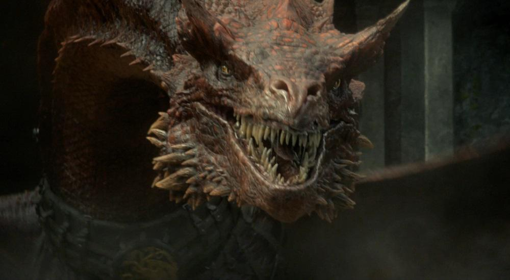
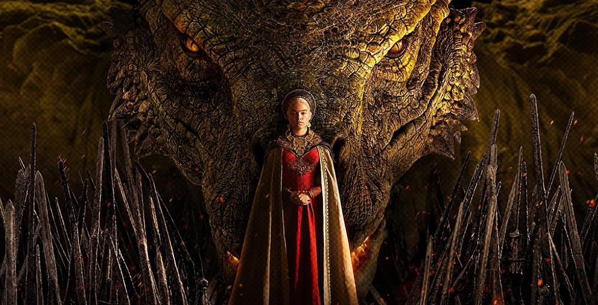
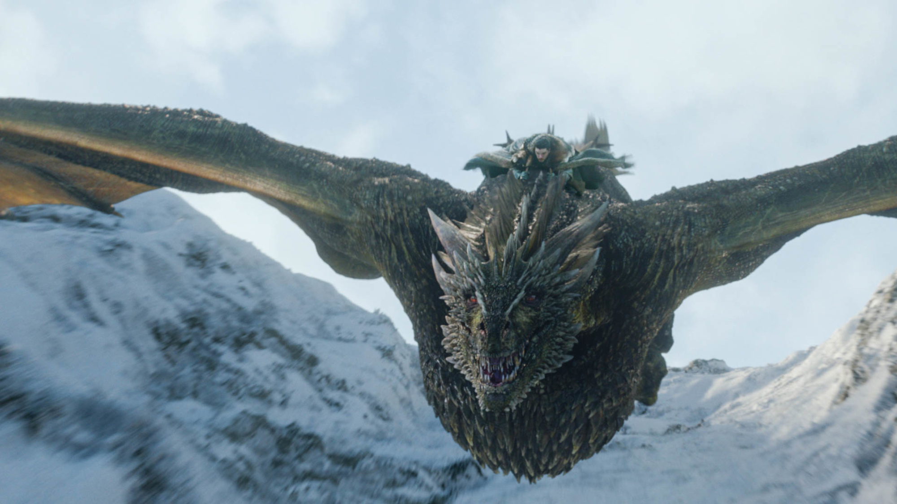

Dragões de House Of The Dragon e Games Of Thrones
- 
- 


- 

Caraxes
Caraxes, também chamado de Wyrm de Sangue e Verme Sangrento, foi o dragão montado pelo Príncipe Aemon Targaryen durante o reinado do Rei Jaehaerys I Targaryen e, mais tarde, pelo Príncipe Daemon Targaryen durante a Dança dos Dragões.
Ele era vermelho, imenso e magro. Em batalha era formidável, temível e experiente. Durante a Dança, Caraxes tinha metade do tamanho de Vhagar. Famoso por sua ferocidade, ele era esguio e de cor vermelho-sangue. Com o passar dos anos, ele se tornou cada vez mais formidável e experiente.
Syrax
Syrax era caracterizada por suas escamas amarelas. Ela era enorme e formidável, mas não tão temível ou experiente em batalha como Caraxes. Foi mantida em correntes e era muito bem alimentada. Syrax já não caçava há anos quando iniciou a guerra civil.
Rhaenyra tomou Syrax como uma montaria pela primeira vez em 104 AC, quando a princesa tinha sete anos de idade. Syrax foi descrita como uma "jovem" dragão-fêmea na época, e a própria Rhaenyra nomeou-a "Syrax" (em homenagem a uma deusa valiriana) - sugerindo fortemente que Syrax não tinha tido cavaleiro anterior.
Vhagar
Vhagar foi uma dragão-fêmea montada por Visenya durante a Conquista, ao lado do Balerion de Aegon o Conquistador e o Meraxes de sua irmã Rhaenys. Outros cavaleiros de dragão de Vhagar foram Lady Laena Velaryon, Príncipe Aemond Targaryen e Príncipe Baelon Targaryen, o Bravo.
Vhagar ganhou este nome em homenagem a um dos deuses da Antiga Valíria.
De acordo com Tyrion Lannister, Vhagar era grande o suficiente para colocar um cavalo goela abaixo.[6] Dizem que a respiração de Vhagar era tão quente que podia derreter a armadura de um cavaleiro e cozinhá-lo por dentro.
Drogon
Drogon é um dos dragões nascidos no Mar Dothraki. Daenerys o batizou com o nome de Drogon em homenagem ao seu marido morto, Drogo.
Foi considerado a reencarnação de Balerion, o Terror Negro, mas Daenerys decidiu dar-lhe um novo nome para uma nova vida. É o maior e mais agressivo entre os três dragões de Daenerys, e ela tem problemas em controlá-lo.
Drogon tem escamas pretas, seus chifres e placas são vermelho sangue e seus olhos são dois poços vermelhos fumegantes.
As chamas que Drogon exala são uma mistura de negro e vermelho e o calor que delas emanam pode ser sentido a vários metros de distância. Seu bater de asas é como um trovão. Seu sangue é negro.
Rhaegal
Rhaegal é um dos dragões nascidos no Mar Dothraki, junto com Drogon e Viserion. Foi batizado por Daenerys Targaryen com esse nome em homenagem ao irmão dela, Rhaegar Targaryen.
Rhaegal possui escamas verdes, um verde escuro, cor de musgo na floresta profunda. Seus olhos são cor de bronze, mais brilhante do que um escuro polido e brilhante com seu próprio calor. Sua chama é laranja e amarela atravessada por fios verdes.
Viserion
Viserion é um dos dragões nascidos no Mar Dothraki, junto com Drogon e Rhaegal. Sob o comando de Daenerys Targaryen, ele foi nomeado em homenagem ao irmão dela, Viserys Targaryen.
As escamas de Viserion são cor de creme, mas os seus chifres, os ossos da asa e sua linha espinhal tem coloração dourada.
Os dentes são adagas negras brilhantes, os olhos são duas piscinas de ouro derretido e sua chama é ouro pálido com raios de vermelho e laranja.